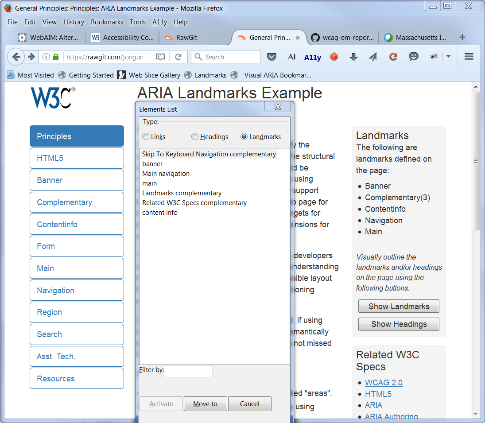
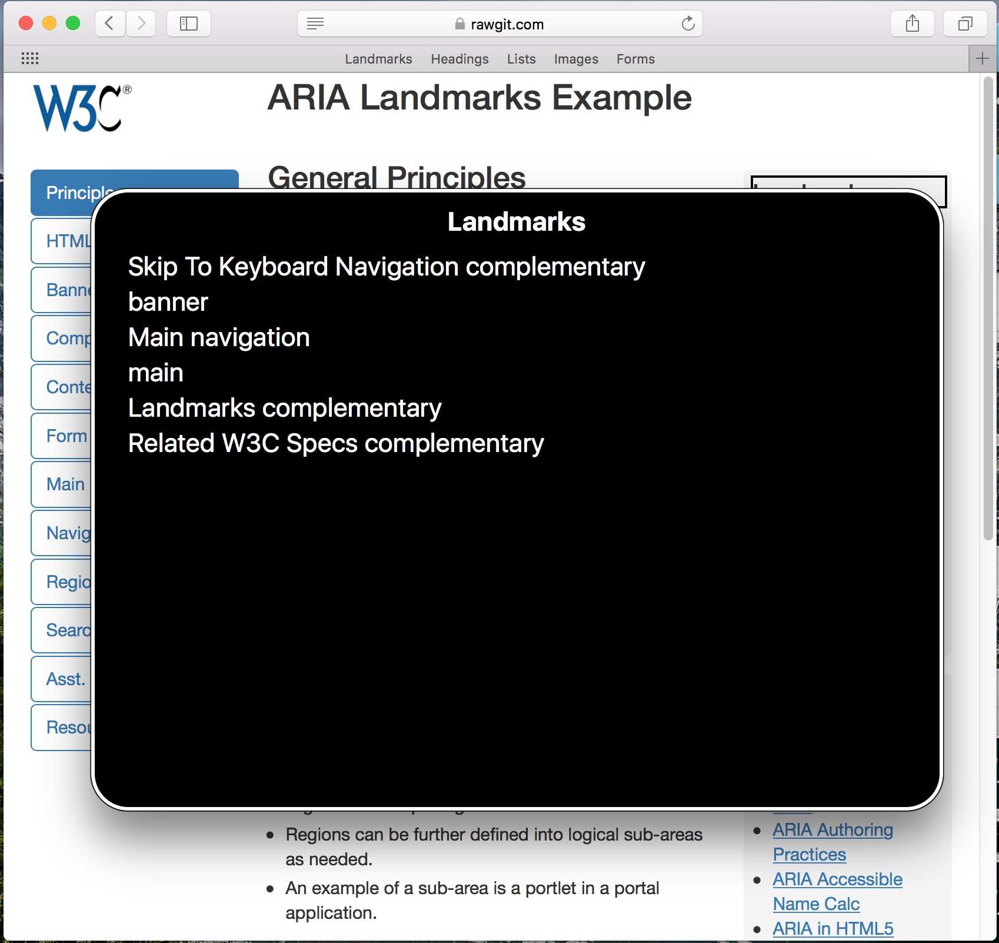
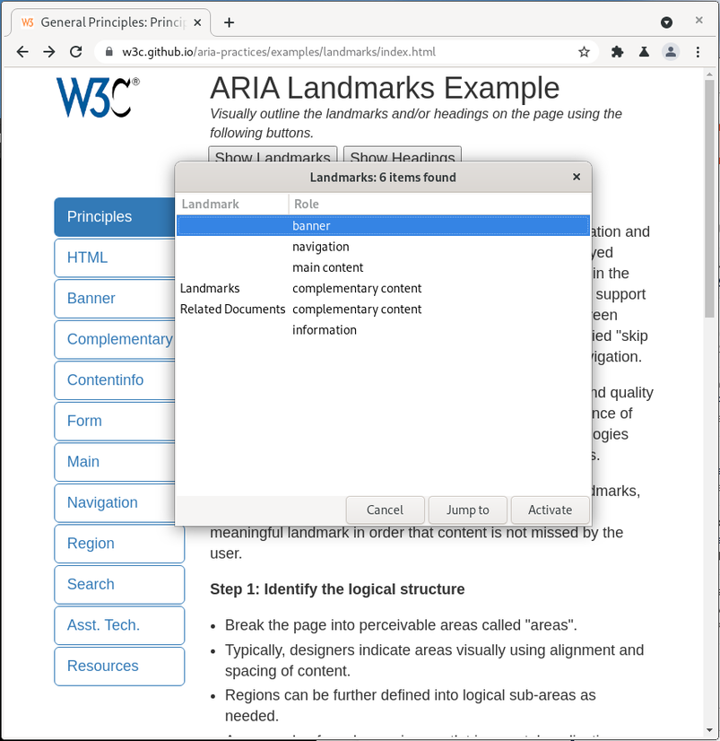
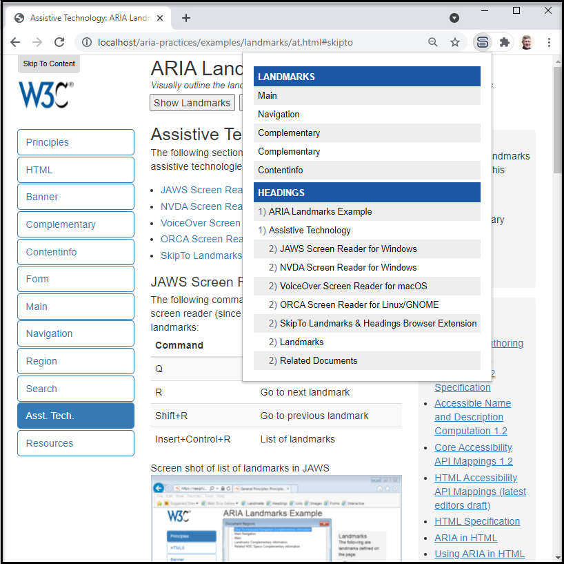

Assistive Technology
The following sections demonstrate how various popular assistive technologies support landmark navigation
- JAWS Screen Reader for Windows
- NVDA Screen Reader for Windows
- VoiceOver Screen Reader for macOS
- ORCA Screen Reader for Linux/Gnome
- SkipTo Landmarks & Headings browser extension
JAWS Screen Reader for Windows
The following commands are available in the JAWS screen reader (since version 15) for navigating landmarks:
| Command | Action |
|---|---|
| Q | Go to main landmark |
| R | Go to next landmark |
| Shift+R | Go to previous landmark |
| Insert+Control+R | List of landmarks |
Screen shot of list of landmarks in JAWS

NVDA Screen Reader for Windows
The following commands are available in NVDA screen reader (since version 2014.2) for navigating landmarks:
| Command | Action |
|---|---|
| D | Go to next landmark |
| Shift+D | Go to previous landmark |
| NVDA+F7 | List of landmarks |
Screen shot of list of landmarks in NVDA

VoiceOver Screen Reader for macOS
The following commands are available in VoiceOver screen reader for navigating landmarks:
| Command | Action |
|---|---|
| W (Quick Nav) | Go to next landmark |
| Shift+W (Quick Nav) | Go to previous landmark |
| Control+Option+U, then left or right arrow key to landmark list | List of landmarks |
Screen shot of list of landmarks in VoiceOver

ORCA Screen Reader for Linux/GNOME
The following commands are available in ORCA Screen reader for navigating landmarks:
| Command | Action |
|---|---|
| M | Next landmark |
| Shift+M | Previous landmark |
| Alt+Shift+M | List of landmarks |
Screen shot of list of landmarks in Orca

SkipTo Landmarks & Headings Browser Extension
The SkipTo Landmarks & Headings browser extension implements the User Agent Accessibility Guidelines 1.0 requirement 9.9 Allow Structured Navigation
. It does this by providing keyboard navigation to landmarks and headings on any web page. The keyboard shortcut to open the SkipTo menu is alt+2 on Windows/Linux and option+2 on Mac keyboards.
Screen shot of list of landmarks and Headings
